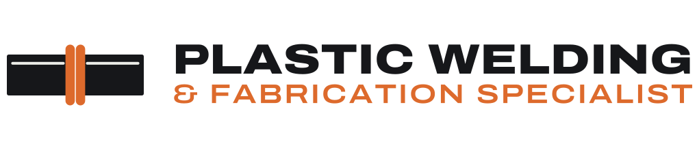
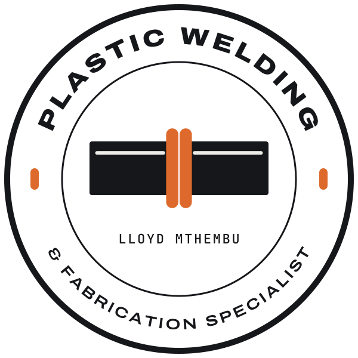
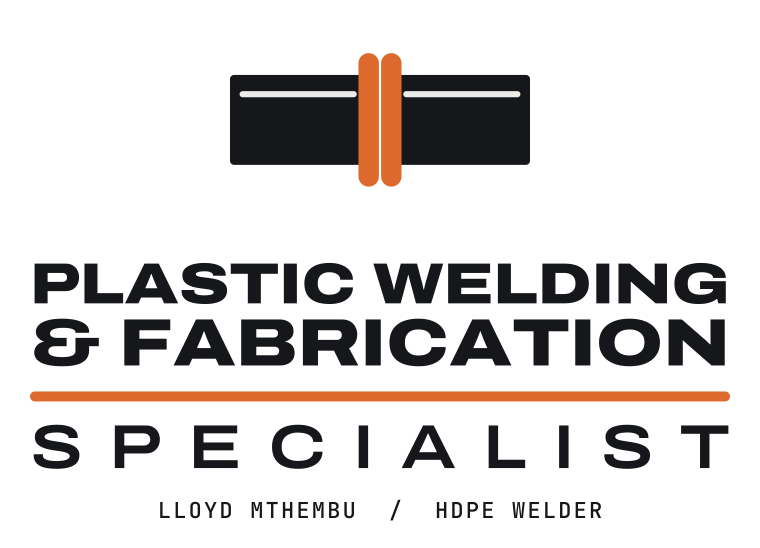
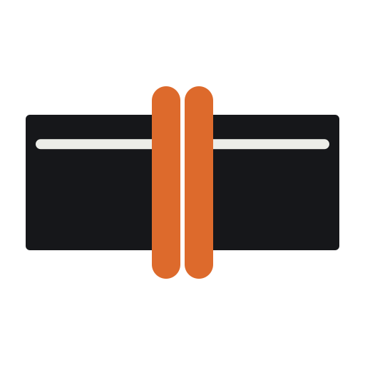
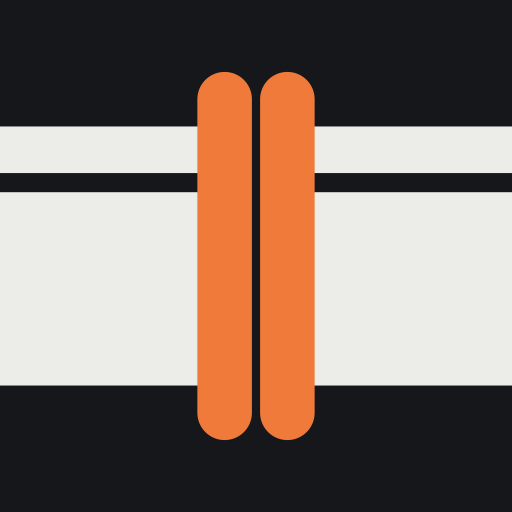

Logo options
Three lockups built on one mark: a butt-fusion joint, the two pipe ends and the double-rolled weld bead a good HDPE fusion weld leaves behind. All are vector files, so they stay sharp from a favicon to a site board.


1. The joint, horizontal
A butt-fusion joint (two pipe ends and the double weld bead between them) beside the name on two lines. Used in the website header, footer and share image. Best for letterheads, invoices, email signatures and vehicle doors.
Files: SVG PNG SVG for dark backgrounds PNG for dark backgrounds


2. The badge
The joint inside a ring of type with Lloyd's name below. Works as a round sticker, a hard-hat decal, a stamp on reports, or a WhatsApp and Facebook profile picture.
Files: SVG PNG SVG for dark backgrounds PNG for dark backgrounds


3. The stacked lockup
The joint over the full name, with an orange bead line and Lloyd's name. Best for overalls, banners, site boards and the front of a company profile.
Files: SVG PNG SVG for dark backgrounds PNG for dark backgrounds


The mark on its own
The joint alone, for the favicon, app icon, social avatars and anywhere the name is already written nearby.
Files: SVG PNG App icon PNG